Change analysis for Belarus for PRIMAP-hist v2.6_final compared to
v2.5.1_final
Overview over
emissions by sector and gas
The following figures show the aggregate national total emissions
excluding LULUCF AR6GWP100 for the country reported priority scenario.
The dotted linesshow the v2.5.1_final data.
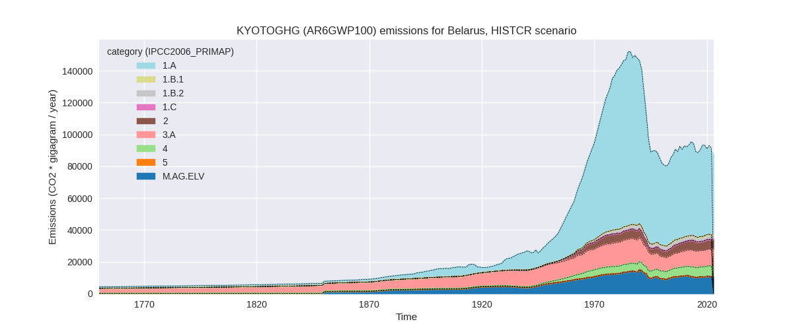
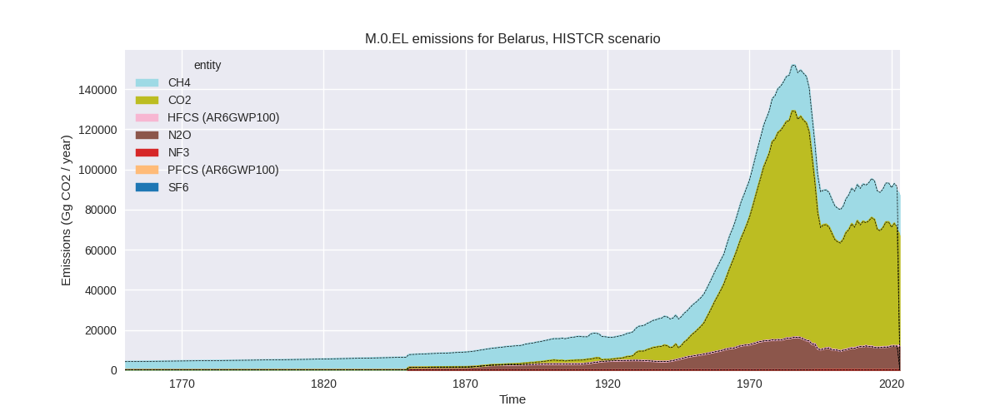
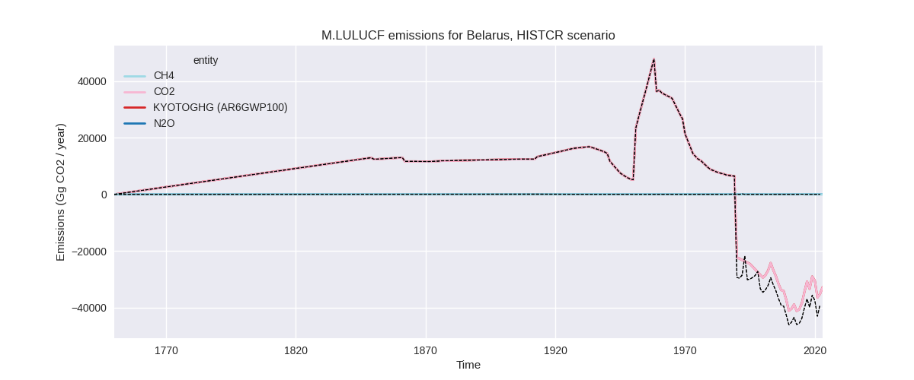
The following figures show the aggregate national total emissions
excluding LULUCF AR6GWP100 for the third party priority scenario. The
dotted linesshow the v2.5.1_final data.
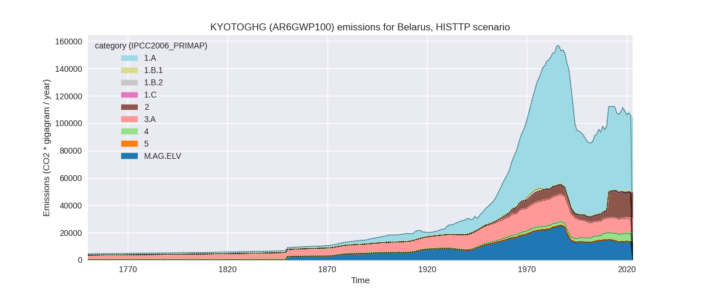
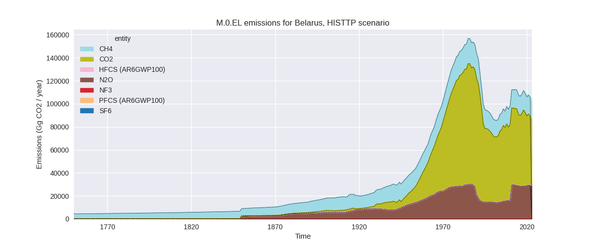
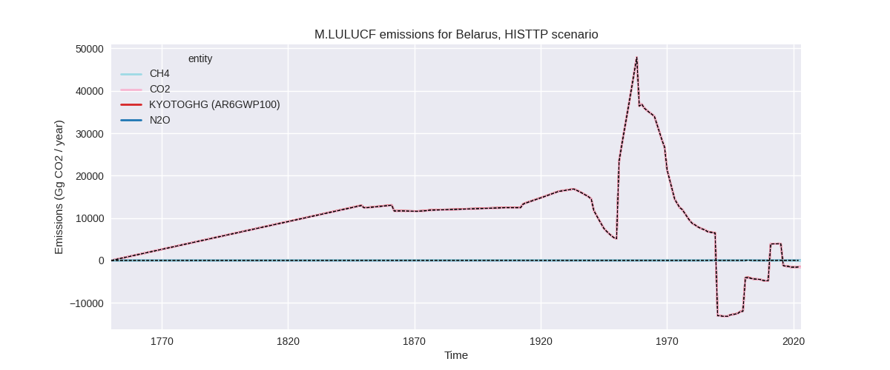
Overview over changes
In the country reported priority scenario we have the following
changes for aggregate Kyoto GHG and national total emissions excluding
LULUCF (M.0.EL):
- Emissions in 2022 have changed by -2.5%% (-2321.36 Gg CO2 / year)
- Emissions in 1990-2022 have changed by -0.1%% (-114.38 Gg CO2 / year)
In the third party priority scenario we have the following changes
for aggregate Kyoto GHG and national total emissions excluding LULUCF
(M.0.EL):
- Emissions in 2022 have changed by 0.1%% (90.47 Gg CO2 / year)
- Emissions in 1990-2022 have changed by 0.1%% (127.81 Gg CO2 / year)
Most
important changes per scenario and time frame
In the country reported priority scenario the
following sector-gas combinations have the highest absolute impact on
national total KyotoGHG (AR6GWP100) emissions in 2022
(top 5):
- 1: 1.A, CO2 with -2155.68 Gg CO2 / year (-4.0%)
- 2: M.AG.ELV, N2O with -122.87 Gg CO2 / year (-1.2%)
- 3: 4, CH4 with -77.44 Gg CO2 / year (-1.2%)
- 4: 2, PFCS (AR6GWP100) with 61.00 Gg CO2 / year (623.6%)
- 5: 1.B.2, CH4 with 52.68 Gg CO2 / year (1.7%)
In the country reported priority scenario the
following sector-gas combinations have the highest absolute impact on
national total KyotoGHG (AR6GWP100) emissions in
1990-2022 (top 5):
- 1: 3.A, CH4 with -91.91 Gg CO2 / year (-0.9%)
- 2: 2, PFCS (AR6GWP100) with 61.00 Gg CO2 / year (450.2%)
- 3: 4, CH4 with -53.00 Gg CO2 / year (-1.0%)
- 4: 1.B.2, CH4 with -27.23 Gg CO2 / year (-0.9%)
- 5: M.AG.ELV, N2O with -24.68 Gg CO2 / year (-0.3%)
In the third party priority scenario the following
sector-gas combinations have the highest absolute impact on national
total KyotoGHG (AR6GWP100) emissions in 2022 (top
5):
- 1: 4, CH4 with 585.00 Gg CO2 / year (10.5%)
- 2: 1.A, CO2 with -560.39 Gg CO2 / year (-1.0%)
- 3: 2, PFCS (AR6GWP100) with 61.00 Gg CO2 / year (623.6%)
- 4: 5, N2O with 9.65 Gg CO2 / year (4.1%)
- 5: 4, CO2 with -4.28 Gg CO2 / year (-15.0%)
In the third party priority scenario the following
sector-gas combinations have the highest absolute impact on national
total KyotoGHG (AR6GWP100) emissions in 1990-2022 (top
5):
- 1: 2, PFCS (AR6GWP100) with 61.00 Gg CO2 / year (450.2%)
- 2: 4, CH4 with 59.13 Gg CO2 / year (1.5%)
- 3: 5, N2O with 36.77 Gg CO2 / year (14.3%)
- 4: 1.A, CO2 with -14.06 Gg CO2 / year (-0.0%)
- 5: 4, CO2 with -8.89 Gg CO2 / year (-24.7%)
Notes on data changes
Here we list notes explaining important emissions changes for the
country. ’' means that the following text only applies to the TP time
series, while means that it only applies to the CR scenario. Otherwise
the note applies to both scenarios.
- We have included data reported by Belarus in 2024. It only covers
the main gases and main sectors (bot not at the same time). we Use
CRF2023 to downscale the data to PRIMAP-hist gases and sectors.
- Energy CO2 emissions in 2022 are lower because country reported 2022
growth rates are lower than growth rates in EI2023 (CR).
- PFC emissions are much higher in the 2024 country reported data than
in CRF 2023. As there is no third party data on PFCs this affects the CR
and TP time-series equally.
- SF6 emissions are much higher in the 2024 country reported data than
in CRF 2023 (CR only). In the TP time-series only 2022 is affected
because of an emissions increase in 2022 (there is no third party data
for 2022).
- NF3 emissions are much lower in the 2024 country reported data than
in CRF 2023. As there is no third party data on NF3 this affects the CR
and TP time-series equally.
- As HFC and PFCs are reported as gas baskets in the 2024 inventory
data we have to use default factors for conversion to other GWPs leading
to changes compared to v2.5.1 for all GWPs except AR4
- 2022 changes in the TP time-series because incorrect FAO data usage
has been fixed.
Changes by sector and gas
For each scenario and time frame the changes are displayed for all
individual sectors and all individual gases. In the sector plot we use
aggregate Kyoto GHGs in AR6GWP100. In the gas plot we usenational total
emissions without LULUCF. ## country reported scenario
2022
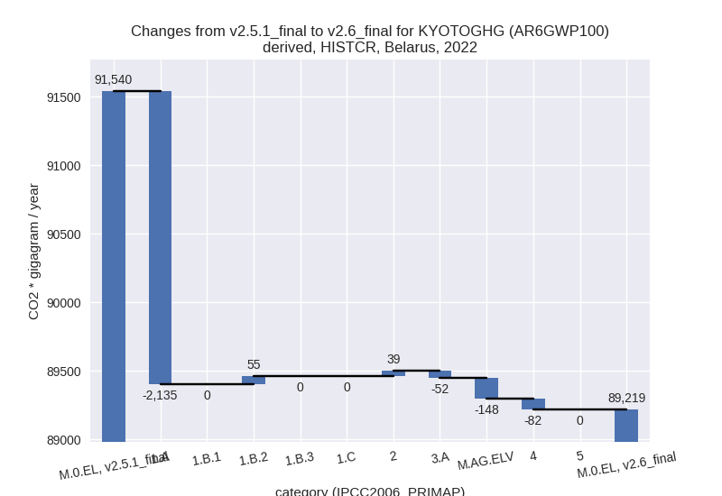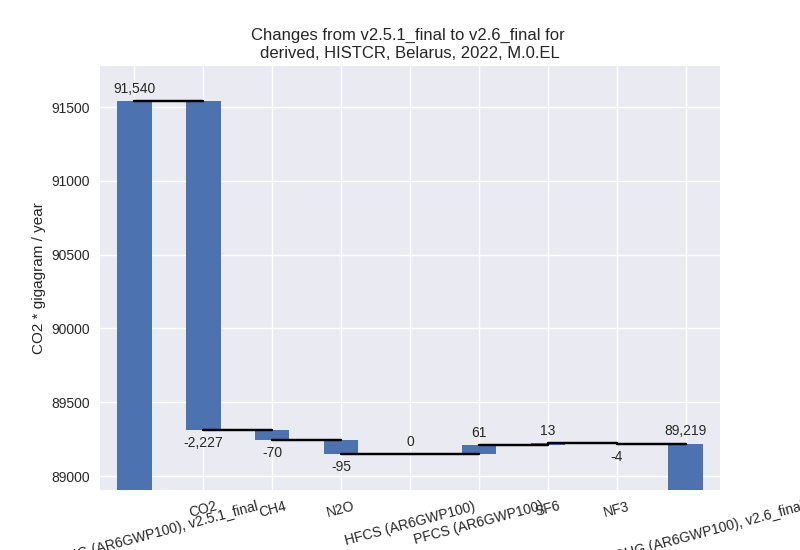
1990-2022
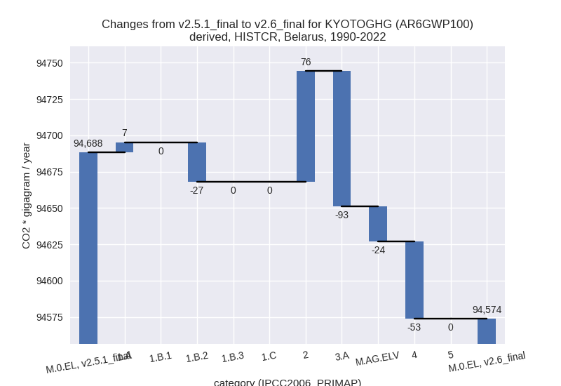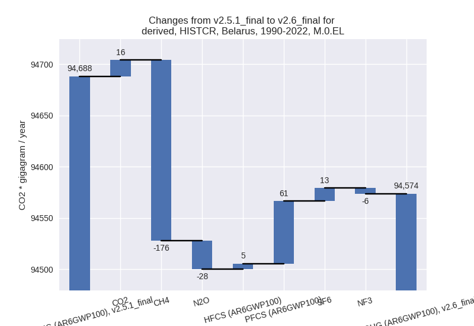
third party scenario
2022
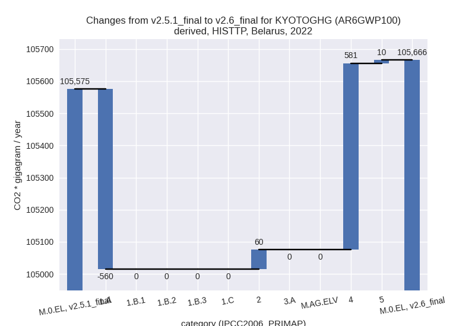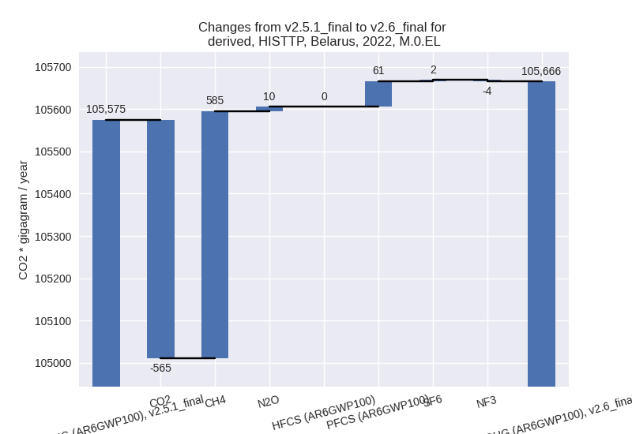
1990-2022
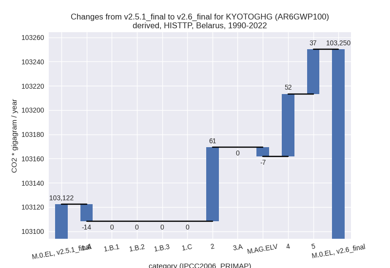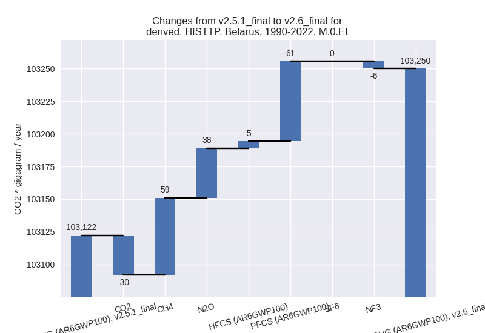
Detailed changes for the
scenarios:
country reported scenario
(HISTCR):
Most important changes
per time frame
For 2022 the following sector-gas combinations have
the highest absolute impact on national total KyotoGHG (AR6GWP100)
emissions in 2022 (top 5):
- 1: 1.A, CO2 with -2155.68 Gg CO2 / year (-4.0%)
- 2: M.AG.ELV, N2O with -122.87 Gg CO2 / year (-1.2%)
- 3: 4, CH4 with -77.44 Gg CO2 / year (-1.2%)
- 4: 2, PFCS (AR6GWP100) with 61.00 Gg CO2 / year (623.6%)
- 5: 1.B.2, CH4 with 52.68 Gg CO2 / year (1.7%)
For 1990-2022 the following sector-gas combinations
have the highest absolute impact on national total KyotoGHG (AR6GWP100)
emissions in 1990-2022 (top 5):
- 1: 3.A, CH4 with -91.91 Gg CO2 / year (-0.9%)
- 2: 2, PFCS (AR6GWP100) with 61.00 Gg CO2 / year (450.2%)
- 3: 4, CH4 with -53.00 Gg CO2 / year (-1.0%)
- 4: 1.B.2, CH4 with -27.23 Gg CO2 / year (-0.9%)
- 5: M.AG.ELV, N2O with -24.68 Gg CO2 / year (-0.3%)
Changes in the main sectors for aggregate KyotoGHG (AR6GWP100)
are
- 1: Total sectoral emissions in 2022 are 55507.89 Gg
CO2 / year which is 62.2% of M.0.EL emissions. 2022 Emissions have
changed by -3.6% (-2079.06 Gg CO2 /
year). 1990-2022 Emissions have changed by -0.0% (-20.12 Gg CO2 / year). For 2022 the
changes per gas
are:
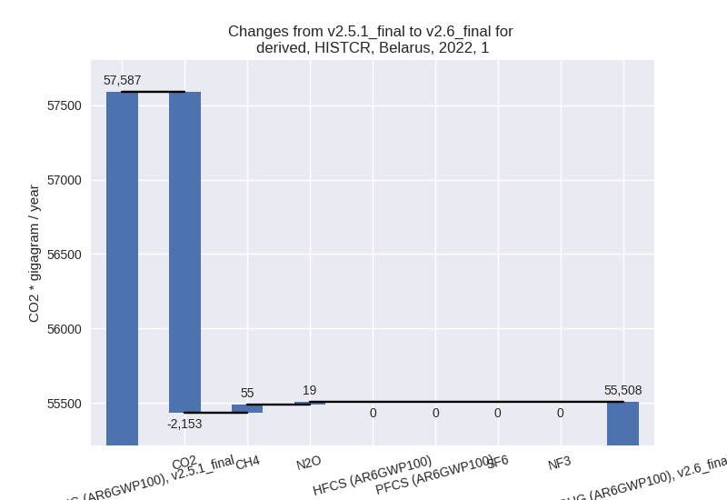
The changes come from the following subsectors:
- 1.A: Total sectoral emissions in 2022 are 52384.99
Gg CO2 / year which is 94.4% of category 1 emissions. 2022 Emissions
have changed by -3.9% (-2134.55 Gg
CO2 / year). 1990-2022 Emissions have changed by 0.0% (7.02 Gg CO2 / year). For 2022 the
changes per gas
are:
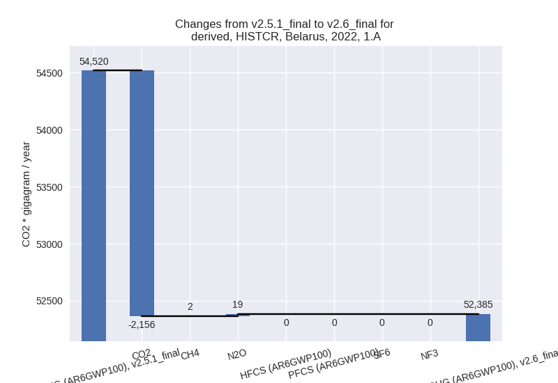
There is no subsector information available in PRIMAP-hist.
- 1.B.2: Total sectoral emissions in 2022 are 3122.89
Gg CO2 / year which is 5.6% of category 1 emissions. 2022 Emissions have
changed by 1.8% (55.49 Gg CO2 /
year). 1990-2022 Emissions have changed by -0.9% (-27.13 Gg CO2 / year).
- 2: Total sectoral emissions in 2022 are 6051.44 Gg
CO2 / year which is 6.8% of M.0.EL emissions. 2022 Emissions have
changed by 0.7% (39.33 Gg CO2 /
year). 1990-2022 Emissions have changed by 1.5% (76.14 Gg CO2 / year).
- M.AG: Total sectoral emissions in 2022 are 21065.87
Gg CO2 / year which is 23.6% of M.0.EL emissions. 2022 Emissions have
changed by -0.9% (-199.93 Gg CO2 /
year). 1990-2022 Emissions have changed by -0.6% (-117.01 Gg CO2 / year).
- 4: Total sectoral emissions in 2022 are 6593.37 Gg
CO2 / year which is 7.4% of M.0.EL emissions. 2022 Emissions have
changed by -1.2% (-81.70 Gg CO2 /
year). 1990-2022 Emissions have changed by -1.0% (-53.39 Gg CO2 / year).
- 5: No data
third party scenario (HISTTP):
Most important changes
per time frame
For 2022 the following sector-gas combinations have
the highest absolute impact on national total KyotoGHG (AR6GWP100)
emissions in 2022 (top 5):
- 1: 4, CH4 with 585.00 Gg CO2 / year (10.5%)
- 2: 1.A, CO2 with -560.39 Gg CO2 / year (-1.0%)
- 3: 2, PFCS (AR6GWP100) with 61.00 Gg CO2 / year (623.6%)
- 4: 5, N2O with 9.65 Gg CO2 / year (4.1%)
- 5: 4, CO2 with -4.28 Gg CO2 / year (-15.0%)
For 1990-2022 the following sector-gas combinations
have the highest absolute impact on national total KyotoGHG (AR6GWP100)
emissions in 1990-2022 (top 5):
- 1: 2, PFCS (AR6GWP100) with 61.00 Gg CO2 / year (450.2%)
- 2: 4, CH4 with 59.13 Gg CO2 / year (1.5%)
- 3: 5, N2O with 36.77 Gg CO2 / year (14.3%)
- 4: 1.A, CO2 with -14.06 Gg CO2 / year (-0.0%)
- 5: 4, CO2 with -8.89 Gg CO2 / year (-24.7%)
Changes in the main sectors for aggregate KyotoGHG (AR6GWP100)
are
- 1: Total sectoral emissions in 2022 are 56124.76 Gg
CO2 / year which is 53.1% of M.0.EL emissions. 2022 Emissions have
changed by -1.0% (-560.39 Gg CO2 /
year). 1990-2022 Emissions have changed by -0.0% (-14.06 Gg CO2 / year).
- 2: Total sectoral emissions in 2022 are 19012.20 Gg
CO2 / year which is 18.0% of M.0.EL emissions. 2022 Emissions have
changed by 0.3% (60.38 Gg CO2 /
year). 1990-2022 Emissions have changed by 0.6% (61.01 Gg CO2 / year).
- M.AG: Total sectoral emissions in 2022 are 23941.43
Gg CO2 / year which is 22.7% of M.0.EL emissions. 2022 Emissions have
changed by 0.0% (0.00 Gg CO2 /
year). 1990-2022 Emissions have changed by -0.0% (-7.42 Gg CO2 / year).
- 4: Total sectoral emissions in 2022 are 6341.59 Gg
CO2 / year which is 6.0% of M.0.EL emissions. 2022 Emissions have
changed by 10.1% (580.83 Gg CO2 /
year). 1990-2022 Emissions have changed by 1.3% (51.50 Gg CO2 / year). For 2022 the
changes per gas
are:
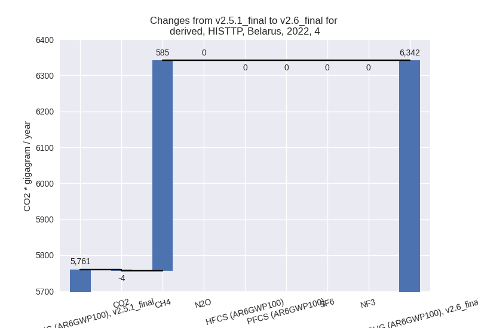
- 5: Total sectoral emissions in 2022 are 245.62 Gg
CO2 / year which is 0.2% of M.0.EL emissions. 2022 Emissions have
changed by 4.1% (9.65 Gg CO2 /
year). 1990-2022 Emissions have changed by 14.3% (36.77 Gg CO2 / year). For 2022 the
changes per gas
are:
For 1990-2022 the changes per gas
are:
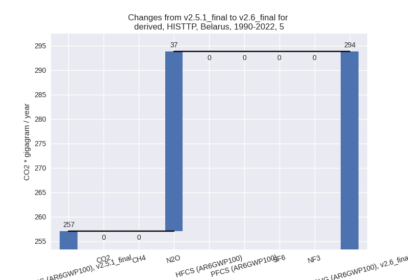